Simon McCabe
OSCP · OSWP · PWPP · PWPA · PAPA · EnCE · Linux+ · LPIC-1 · Network+ · Security+ · Pentest+ · eJPT · eWPT · BSc · PGCert

OSCP · OSWP · PWPP · PWPA · PAPA · EnCE · Linux+ · LPIC-1 · Network+ · Security+ · Pentest+ · eJPT · eWPT · BSc · PGCert
...Lian_Yu Writeup...
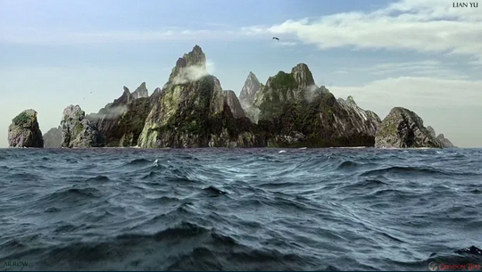
I browsed to the IP, and saw a rather nice looking ocean view! A default dirb search found nothing, nor did a Nikto search. An nmap scan had found port both 21 and 22 open - which would come in useful later on.
Next, I fired up GoBuster and used the medium wordlist that can be found in the /usr/share/wordlists/dirbuster folder. This resulted in a hit for /island:
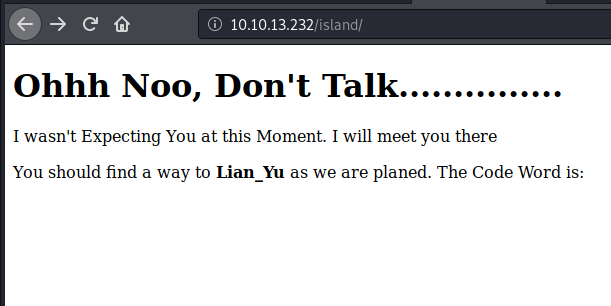
Highlighting the page, or viewing the source code shows the next clue: vigilante. This looked like a username. But now, we need a password to go with it.
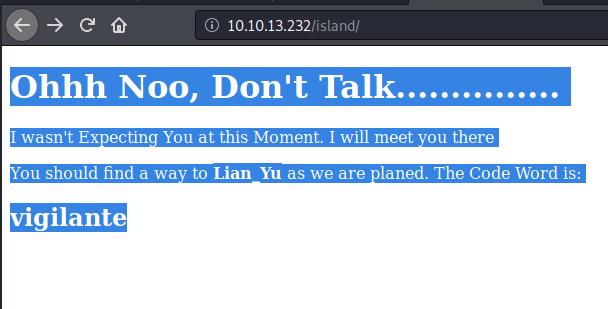
I ran the following command:
gobuster dir -u 10.10.13.232/island -w /usr/share/wordlists/dirbuster/directory-list-2.3-medium.txt
This found a sub-directory named 2100. The source code suggested a .ticket file was available. I wont lie - I went down a few rabbit holes here, until I eventually figured the answer was in plain sight - .ticket was the extension we need.
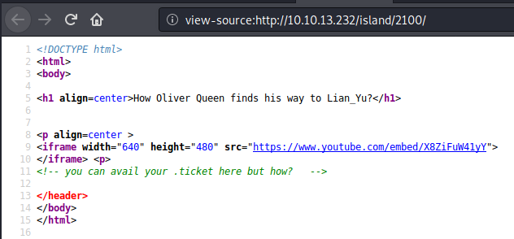
I used another gobuster command to fuzz for the file we needed:
gobuster dir -u 10.10.13.232/island/2100 -w /usr/share/wordlists/dirbuster/directory-list-2.3-medium.txt -x .ticket
This led to the following intriguing file.
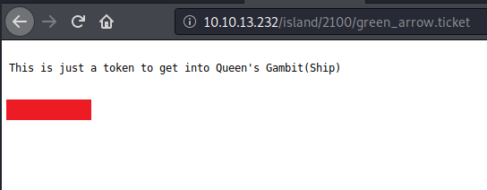
After some confusion, it turned out to be base58. Yes, you read that correctly. I wasn't expecting that.
So now, we've got a username, and password. I tried to log in via SSH, which didn't work. But what did work, was FTP.
Browsing the home directory confirmed two users: slade + vigilante. There were 3 files in the vigilante folder.
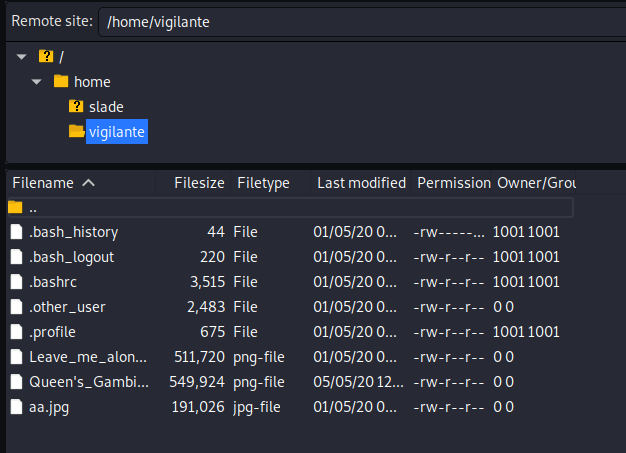
Back to the drawing board. I went back to the vigilante folder and this time, displayed hidden files within filezilla. Do'h!!!
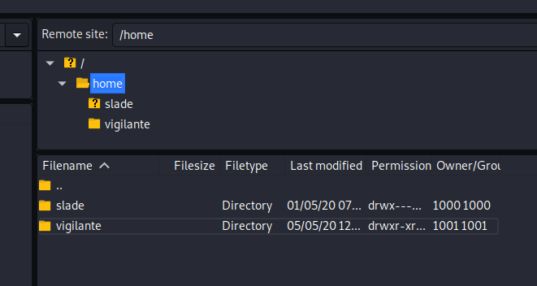
I downloaded all the files. The most obvious was the "Leave_me_alone.png" file. The magic header was wrong, and needed changing to that of a png file. This made the file viewable. The file displayed a "password" which would come in useful for the next step.
The next step took me a while to figure out and I needed to re-trace my steps. We had a password, but no username. Ah! We don't need one. We can use this password to extract the file(s) from aa.jpg.
Running:
steghide extract -sf aa.jpg
and entering the password from the previous step revealed a file called ss.zip. I extracted the files and took a look inside. Now, we had a password, but no username:
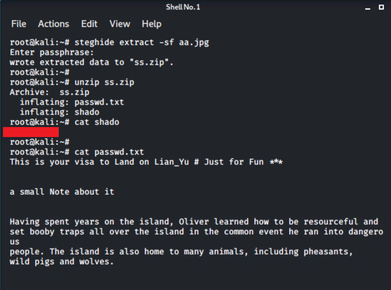
I tried logging in as slade and vigilante - the former of the two worked:
user.txt is here, in slade's home directory.
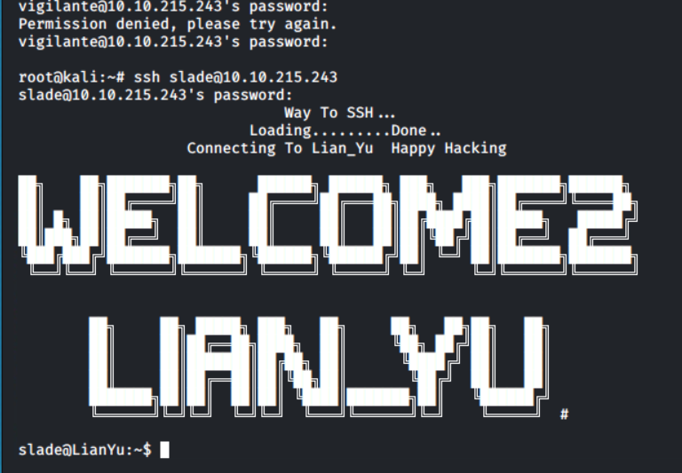
Now, I ran: "sudo -l"
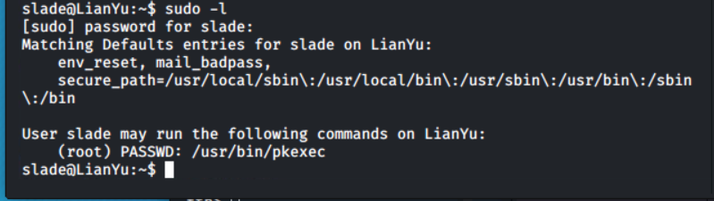
Awesome! We can run /usr/bin/pkexec as root. But, what is pkexec? Who cares, off to gtfobins, right?!
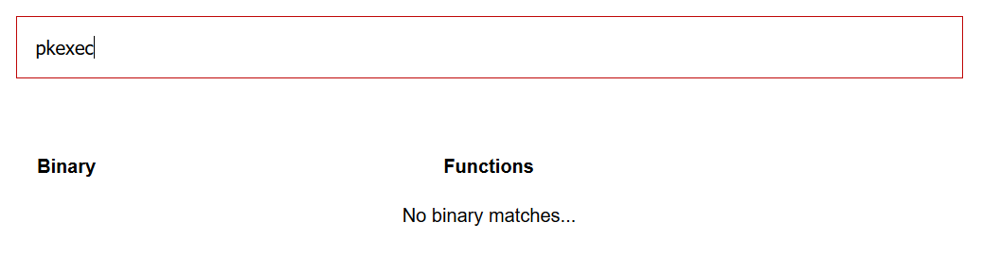
Oh. Ok. Nevermind. Umm. What does pkexec do?
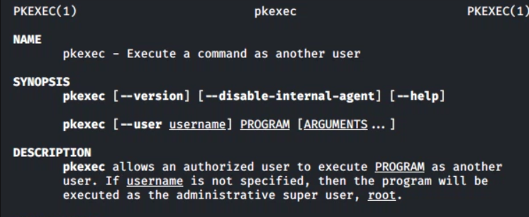
Oh really? Nice! I first looked at what the name of the flag was in /root , and then read the command. CTF complete! Or was it?
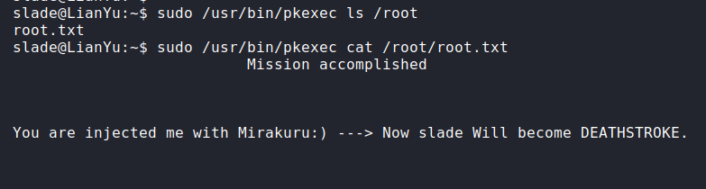
I decided it wasn't complete until I got my root shell:
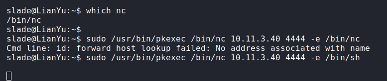
I set up my listener and awaited my connection:
And, we're root!
Key takeaway points from this box:
Really enjoyed the box. Thanks to the box-creator for this one!!